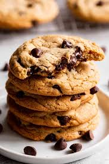

Chocolate Chip Cookies

Description
Chocolate chip cookies are a classic treat beloved for their crisp edges,
soft centers, and rich bursts of melted chocolate in every bite. They’re
simple to make and perfect for sharing with family and friends.
This recipe balances sweetness and chewiness, creating cookies that are golden
brown on the outside while staying soft and gooey inside. Enjoy them warm
with a glass of milk or as a snack any time of day.
Ingredients
- 2 1/4 cups all-purpose flour
- 1 teaspoon baking soda
- 1/2 teaspoon salt
- 1 cup (2 sticks) unsalted butter, softened
- 3/4 cup granulated sugar
- 3/4 cup packed brown sugar
- 2 large eggs
- 2 teaspoons vanilla extract
- 2 cups semisweet chocolate chips
- Optional: 1 cup chopped nuts (walnuts or pecans)
Steps
- Preheat your oven to 350°F (175°C). Line a baking sheet with parchment paper.
- In a medium bowl, whisk together the flour, baking soda, and salt. Set aside.
- In a large bowl, beat the softened butter, granulated sugar, and brown sugar until creamy and smooth.
- Add the eggs one at a time, mixing well after each addition. Stir in the vanilla extract.
- Gradually add the dry ingredients into the wet mixture, mixing until just combined.
- Fold in the chocolate chips (and nuts, if using).
- Drop rounded tablespoons of dough onto the prepared baking sheet, spacing them about 2 inches apart.
- Bake for 9–11 minutes, or until the edges are golden brown but the centers are still soft.
- Allow cookies to cool on the baking sheet for a few minutes before transferring them to a wire rack to cool completely.